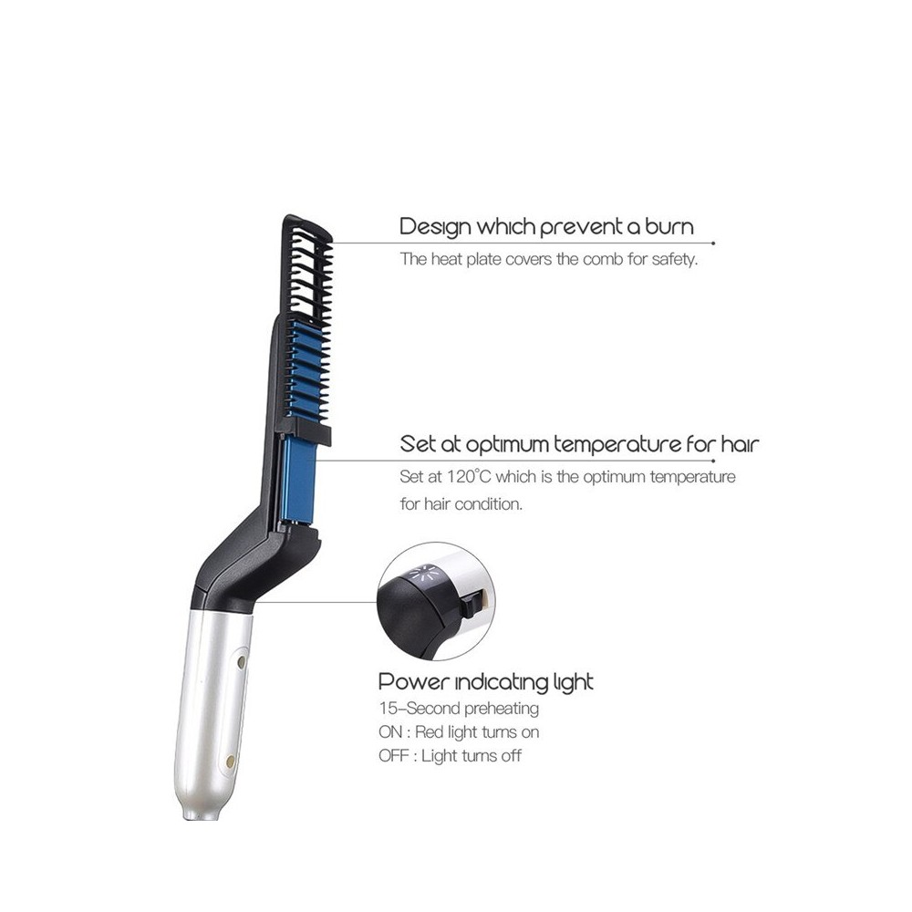

Plaukų tiesintuvai
Norėdami produktą įdėti į pageidavimų sąrašą, turite prisijungti
Tęsti prekių paiešką Prisijungti Pradinis puslapis 0 Krepšelis 0 Norų sąrašas Prekių katalogas Prekių ženklai Parduotuvės Kontaktai Prisijungti Turite klausimų? +370 699 98937 Prekių katalogas Plaukams Plaukams Plaukų kosmetika Plaukų kosmetika Šampūnai Kaukės plaukams Balzamai, kondicionieriai Aliejai, serumai, losjonai Plaukų formavimo priemonės Dažančios plaukų kaukės, šampūnai Kvepalai plaukams Plaukų priežiūros rinkiniai Šepečiai, šukos plaukams Šepečiai, šukos plaukams Šepečiai Šukos Vaikams Elektros prietaisai Elektros prietaisai Plaukų džiovintuvai Plaukų tiesintuvai Formuotuvai, elektriniai suktukai Plaukų kirpimo mašinėlės Plaukų trimeriai Barzdaskutės Plaukų dažai Plaukų dažai Ilgalaikiai plaukų dažai Pusiau ilgalaikiai plaukų dažai Beamoniakiai plaukų dažai Cheminis plaukų tiesinimas/garbanojimas Plaukų šviesinimo milteliai/kremai Oksidantai plaukams Plaukų dažymo priedai Plaukų kirpimo žirklės Veidrodžiai Plaukų aksesuarai Plaukų aksesuarai Plaukų segtukai Plaukų gumytės Suktukai plaukams, papilotės Kempinės kuodams Plaukų juostos, lankeliai Tinkleliai plaukams Vaikams Manekenų galvos Prisegami, priauginami plaukai Lagaminai, įrankių dėklai Veidui ir kūnui Veidui ir kūnui Veidui Veidui Aksesuarai (pincetai, peiliukai) Antakių, blakstienų dažai Kaukės Kremai Paakių kremai, kaukės Prausikliai Rinkiniai veidui Serumai Šveitikliai Tonikai Veido masažuokliai Veido valymo įrankiai Kūnui Kūnui Auskarai Depiliacija Dulksna, dezodorantai Elektriniai šveitikliai, masažuokliai Kremai, losjonai, sviestas Prausikliai, dušo želė Rinkiniai kūnui Saulės kosmetika Savaiminio įdegio priemonės Šveitikliai Makiažui Makiažui Veidui Veidui Birios, mineralinės pudros Kompaktinės pudros Makiažo bazės Makiažo fiksavimo priemonės Makiažo pagrindas Makiažo valikliai Maskuojamosios priemonės Modeliavimo priemonės Skaistalai, bronzantai Švytėjimo suteikiančios priemonės Antakiams Antakiams Antakių formavimo priemonės Antakių pieštukai/šėšėliai Akims Akims Akių pieštukai, pravedimai Akių šešėliai Akių šešėlių pagrindai Blakstienų serumai Blakstienų tušai Priklijuojamos blakstienos Rinkiniai akims Lūpoms Lūpoms Lūpų blizgiai Lūpų dažai Lūpų pieštukai Lūpų priežiūros priemonės Makiažo kempinėlės, šepetėliai Aksesuarai Aksesuarai Kiti makiažo priedai Kosmetinės Vizažisto lempos Vizažistų lagaminai/įrankių dėklai Nagams Nagams UV, LED, Hibridinės lempos Frezos, dulkių nutraukėjai Frezos, dulkių nutraukėjai Frezos Frezų antgaliai Manikiūro, pedikiūro įrankiai Manikiūro, pedikiūro įrankiai Dildės, blokeliai Dildės, skustuvai pėdoms Manikiūro, pedikiūro rinkiniai Odelių atstūmėjai Žirklutės odelėms, nagams Žnyplutės odelėms, nagams Gelio-lako sistema Gelio-lako sistema Gelio-lako bazė Gelis-lakas Paruošiamosios priemonės Viršutinės gelio-lako dangos Vienfaziai geliai-lakai Nagų priauginimo sistemos Nagų priauginimo sistemos Akrilo sistema DIP sistema Gelio sistema Poligelis Nagų lakai Nagų lakai Gelio efekto nagų lakai Nagų lakai Nagų stiprikliai Vaikams Nagų dizainas Parafino procedūroms Parafino procedūroms Parafinas Vonelės ir priedai Pėdų priežiūros priemonės Rankų priežiūros priemonės Papildomos priemonės Papildomos priemonės Dezinfekavimui, sterilizavimui Vienkartinės prekės Kvepalai Kvepalai Parfumuotas vanduo Nišiniai kvepalai Kūno dulksna Kvepalai plaukams Kvepalai vyrams Namams Namams Aromaterapinės žvakės Eteriniai aliejai Kvapų difuzoriai Namų kvapai Vyrams Vyrams Plaukų kirpimo mašinėlės vyrams Plaukų trimeriai Barzdaskutės Barzdos priežiūros priemonės Šampūnai, kondicionieriai, tonikai Plaukų formavimo priemonės vyrams Šepečiai Rinkiniai vyrams Veidui Kūnui Kvepalai Skutimuisi, po skutimosi Profesionalams Profesionalams Kirpėjams Kirpėjams Baldai salonams Elektros prietaisai Manekenų galvos Papildomos kirpėjų darbo priemonės Plaukų dažai Plaukų kosmetika Prisegami, priauginami plaukai Veidrodžiai Vienkartinės prekės Žirklės Kosmetologams Kosmetologams Blakstienų priauginimo priemonės Cheminis rietimas ir laminavimas Depiliacija Parafino procedūroms Priemonės veido procedūroms Veidrodžiai Vienkartinės prekės Baldai kosmetologams Vizažistams Vizažistams Akims Aksesuarai Antakiams Lūpoms Makiažo kempinėlės, šepetėliai Veidui Manikiūristams Manikiūristams Baldai manikiūristams Frezos, dulkių nutraukėjai Gelio-lako sistema Manikiūro, pedikiūro įrankiai Nagų dizainas Nagų lakai Nagų priauginimo sistemos Papildomos priemonės Pėdų priežiūros priemonės Rankų priežiūros priemonės UV, LED, Hibridinės lempos Vienfaziai geliai-lakai Vienkartinės prekės Burnos higiena Burnos higiena Elektriniai dantų šepetėliai Irigatoriai Dantų balinimo priemonės Prekės gyvūnams Prekės gyvūnams Gyvūnų kirpimo, kantavimo mašinėlės Peiliukai, antgaliai gyvūnų kirpimo mašinėlėms Šampūnai / kondicionieriai gyvūnams Šukos, šepečiai gyvūnams Žirklės kailio kirpimui Žirklutės gyvūnų nagams Iki nemokamo pristatymo į namus trūksta: 29,00 € Prisijungti 0 0,00 € Krepšelis tuščias. 0 LT LT EN RU Apie mus Grožio mokykla Pristatymas Atsiskaitymo būdai LT LT EN RU Turite klausimų? +370 699 98937 Iki nemokamo pristatymo į namus trūksta: 29,00 € Prisijungti 0 0,00 € Krepšelis tuščias. 0 LT LT EN RU Kontaktai Parduotuvės Prekių katalogas Prekių ženklai Plaukams Veidui ir kūnui Makiažui Nagams Kvepalai Vyrams Profesionalams Burnos higiena Prekės gyvūnams Plaukų kosmetika Šampūnai Kaukės plaukams Balzamai, kondicionieriai Aliejai, serumai, losjonai Plaukų formavimo priemonės Dažančios plaukų kaukės, šampūnai Kvepalai plaukams Plaukų priežiūros rinkiniai Šepečiai, šukos plaukams Šepečiai Šukos Vaikams Elektros prietaisai Plaukų džiovintuvai Plaukų tiesintuvai Formuotuvai, elektriniai suktukai Plaukų kirpimo mašinėlės Plaukų trimeriai Barzdaskutės Plaukų dažai Ilgalaikiai plaukų dažai Pusiau ilgalaikiai plaukų dažai Beamoniakiai plaukų dažai Cheminis plaukų tiesinimas/garbanojimas Plaukų šviesinimo milteliai/kremai Oksidantai plaukams Plaukų dažymo priedai Plaukų kirpimo žirklės Veidrodžiai Plaukų aksesuarai Plaukų segtukai Plaukų gumytės Suktukai plaukams, papilotės Kempinės kuodams Plaukų juostos, lankeliai Tinkleliai plaukams Vaikams Manekenų galvos Prisegami, priauginami plaukai Lagaminai, įrankių dėklai Veidui Aksesuarai (pincetai, peiliukai) Antakių, blakstienų dažai Kaukės Kremai Paakių kremai, kaukės Prausikliai Rinkiniai veidui Serumai Šveitikliai Tonikai Veido masažuokliai Veido valymo įrankiai Kūnui Auskarai Depiliacija Dulksna, dezodorantai Elektriniai šveitikliai, masažuokliai Kremai, losjonai, sviestas Prausikliai, dušo želė Rinkiniai kūnui Saulės kosmetika Savaiminio įdegio priemonės Šveitikliai Veidui Birios, mineralinės pudros Kompaktinės pudros Makiažo bazės Makiažo fiksavimo priemonės Makiažo pagrindas Makiažo valikliai Maskuojamosios priemonės Modeliavimo priemonės Skaistalai, bronzantai Švytėjimo suteikiančios priemonės Antakiams Antakių formavimo priemonės Antakių pieštukai/šėšėliai Akims Akių pieštukai, pravedimai Akių šešėliai Akių šešėlių pagrindai Blakstienų serumai Blakstienų tušai Priklijuojamos blakstienos Rinkiniai akims Lūpoms Lūpų blizgiai Lūpų dažai Lūpų pieštukai Lūpų priežiūros priemonės Makiažo kempinėlės, šepetėliai Aksesuarai Kiti makiažo priedai Kosmetinės Vizažisto lempos Vizažistų lagaminai/įrankių dėklai UV, LED, Hibridinės lempos Frezos, dulkių nutraukėjai Frezos Frezų antgaliai Manikiūro, pedikiūro įrankiai Dildės, blokeliai Dildės, skustuvai pėdoms Manikiūro, pedikiūro rinkiniai Odelių atstūmėjai Žirklutės odelėms, nagams Žnyplutės odelėms, nagams Gelio-lako sistema Gelio-lako bazė Gelis-lakas Paruošiamosios priemonės Viršutinės gelio-lako dangos Vienfaziai geliai-lakai Nagų priauginimo sistemos Akrilo sistema DIP sistema Gelio sistema Poligelis Nagų lakai Gelio efekto nagų lakai Nagų lakai Nagų stiprikliai Vaikams Nagų dizainas Parafino procedūroms Parafinas Vonelės ir priedai Pėdų priežiūros priemonės Rankų priežiūros priemonės Papildomos priemonės Dezinfekavimui, sterilizavimui Vienkartinės prekės Parfumuotas vanduo Nišiniai kvepalai Kūno dulksna Kvepalai plaukams Kvepalai vyrams Namams Aromaterapinės žvakės Eteriniai aliejai Kvapų difuzoriai Namų kvapai Plaukų kirpimo mašinėlės vyrams Plaukų trimeriai Barzdaskutės Barzdos priežiūros priemonės Šampūnai, kondicionieriai, tonikai Plaukų formavimo priemonės vyrams Šepečiai Rinkiniai vyrams Veidui Kūnui Kvepalai Skutimuisi, po skutimosi Kirpėjams Baldai salonams Elektros prietaisai Manekenų galvos Papildomos kirpėjų darbo priemonės Plaukų dažai Plaukų kosmetika Prisegami, priauginami plaukai Veidrodžiai Vienkartinės prekės Žirklės Kosmetologams Blakstienų priauginimo priemonės Cheminis rietimas ir laminavimas Depiliacija Parafino procedūroms Priemonės veido procedūroms Veidrodžiai Vienkartinės prekės Baldai kosmetologams Vizažistams Akims Aksesuarai Antakiams Lūpoms Makiažo kempinėlės, šepetėliai Veidui Manikiūristams Baldai manikiūristams Frezos, dulkių nutraukėjai Gelio-lako sistema Manikiūro, pedikiūro įrankiai Nagų dizainas Nagų lakai Nagų priauginimo sistemos Papildomos priemonės Pėdų priežiūros priemonės Rankų priežiūros priemonės UV, LED, Hibridinės lempos Vienfaziai geliai-lakai Vienkartinės prekės Elektriniai dantų šepetėliai Irigatoriai Dantų balinimo priemonės Gyvūnų kirpimo, kantavimo mašinėlės Peiliukai, antgaliai gyvūnų kirpimo mašinėlėms Šampūnai / kondicionieriai gyvūnams Šukos, šepečiai gyvūnams Žirklės kailio kirpimui Žirklutės gyvūnų nagams 1 9 A B C D E F G H I J K L M N O P Q R S T V W Y Z 1 1821ManMade 1Foundation 9 9CC A Acurata Agadir Amazing Shine Andis Andrea Apraise Aquvo Aromase Artistic Nail Design Ashmira Botanica B BCL BIOTOP Professional BaByliss PRO Barba Italiana Be OSOM Beautiful Brows Beautiful Star Beauty BLVD Beauty Blender Bella Pierre Bellissima Imetec Belotty Better Waxing Technology Bi-Kor Biemme Biotulin Blue Cross Bodyography Bohemian Glassworks Borim Bratt Trading Bye Bye Virus C CLIV CNC CNF Cosmetics Caflon Cala California Mango Canvas Carex Casmara Celeb Luxury Ceriotti Chaplet ChemiPharm ClearZal Coconut Lane Comair Crazy Colors Credo colorpHlex D DSD Deluxe Decorse & Voirin DerMeiren DermOrganic Dermabotul Dicora Dlux Dongri Dr. Jart+ E ETI Ecococo Ecru Ekai Technology Eko Higiena Eleven Australia Epilady Eprouvage Erbolinea Evergreen Electronic Eyebrowz, JAV F FHI Face Facts Flormar Foamie Framar Frank Body G GHD Gli Elementi Goth Design Greenland Guerisson H Haaro Hairmax Hairpearl Heathcote & Ivory Heli s GOLD Hemp Seed Henbor Hercules Herra Heyland & Whittle Higėja Holika Holika Human+kind Hyangnam Beauty I IBI Ice Cream Icoguanti Imetec Intern Nail Invisibobble Iroha Ivismile J Jaguar Jenoris Jerome Russell BBlonde John s Blend K Keep It Clean Kent Keratin Complex Keune Kinetics Konjac Sponge L L Alga L Oréal Professionnel Lakme Lancior Lange Last Swab Lavertu Layla Little Green Locatelli Logex Luxie M MIA Kids MRY Macadamia Macho Make Up Studio MakeUp Eraser Mamibot Marathon Marrakesh Master Gel Matsuzaki MegaPoint Milk&Friends Mimesis Miracletox Miss Kay Mizon MoYou More Room Morgans Pomade Moroccan Gold Series Moroccan Tan Moser Muran N NYCE Nak Nina Ultra Pro Ninja O OMG! OPI OSOM Professional Olivia Garden Omega Organic Pure Care Oright Osmo Osom Oyster Cosmetics P Padrol Pakcare Panasonic Paris Hilton Paul Mitchell Pegasus Petitfee Philip Martin s Pobling Promed Q Quickepil R RefectoCil Roial Royx S STYX Saphira Saryna KEY Savex Savina Blue Cross She Hair Extension Shills Sibel Sidu Silcare Silver Star Simple Use Beauty SmoothSkin Solac Spa Ritual Split Ender Staleks Starpil Steblanc Style Dry Sumita Summe Cosmetics Suntachi Sylph T TEK TOUCHBeauty Tangle Angel Tangle Teezer The Knot Dr. The Wet Brush Trendy Hair Trind V Vitayes Voesh W Wahl Wahl Professional Wahl pro Animal Waldschmidt Wella Professionals Wilson Withus Y Y.S. Park Yellow Z Zarkoperfume Zyle Top ženklai 1821ManMade Andis BaByliss PRO Casmara Kinetics Lakme Make Up Studio Mizon OPI OSOM Professional Philip Martin s Saphira Tangle Teezer Wahl Professional Visi prekių ženklai Kategorija
Filtravimas
Kaina € Nuo Iki Išsaugoti Išvalyti Tiesintuvo plokštelės Keraminės Nano keramika Nano titano turmalino Titano Titano keramika Turmalino keramika Šilku dengtos Išvalyti Jonų generatorius Taip Išvalyti Garbanojimo funkcija Ne Taip Išvalyti Infraraudonųjų spindulių technologija Taip Išvalyti Prekės ženklas BaByliss PRO Bellissima Imetec FHI GHD Jaguar OSOM Professional Osom Suntachi Išvalyti Uždaryti Išsaugoti Pagrindinis Plaukams Elektros prietaisai Plaukų tiesintuvai Plaukų tiesintuvai Rikiavimas: Aktualumas Kaina, mažiausia - didžiausia Kaina, didžiausia - mažiausia Aktualumas Aktualumas Kaina, mažiausia - didžiausia Kaina, didžiausia - mažiausia FiltravimasAktyvūs filtrai
BaByliss PRO Plaukų tiesintuvas BaByliss PRO Mini Elipsis2000 BAB2000EPE 61,00 € BaByliss PRO Plaukų tiesintuvas BaByliss PRO Python Collection BAB2039PYE, 25 mm 25,30 € 62,00 € BaByliss PRO Plaukų tiesintuvas BaByliss PRO BaBySleek Ceramic Mini BAB2050E, 13 mm 30,00 € BaByliss PRO Plaukų tiesintuvas BaByliss PRO Ultra Curl BAB2071EPE su EP 5.0 technologija 65,45 € 77,00 € BaByliss PRO Plaukų tiesintuvas BaByliss PRO Sleek Expert BAB2072EPE su EP 5.0 technologija, 24 mm 85,00 € BaByliss PRO Plaukų tiesintuvas BaByliss PRO V Fast & Furious BAB2072EPRE su 5.0 EP technologija 85,00 € BaByliss PRO Plaukų tiesintuvas BaByliss PRO Sleek Expert Rose Gold BAB2072RGEPE su EP 5.0 technologija, 24 mm, limituota serija 85,00 € BaByliss PRO Plaukų tiesintuvas BaByliss PRO Dry & Straighten BAB2073EPE su EP 5.0 technologija, 38 mm 90,00 € BaByliss PRO Plaukų tiesintuvas BaByliss PRO Sun Ray BAB2073EPYE su EP 5.0 technologija, 38 mm BaByliss PRO Plaukų tiesintuvas BaByliss PRO The Straightener 2091EPE su 5.0 EP technologija, 28 mm 76,50 € 90,00 € BaByliss PRO Plaukų tiesintuvas BaByliss PRO BAB2191SEPE su talpa vandeniui, 28 mm 100,30 € 118,00 € BaByliss PRO Plaukų tiesintuvas BaByliss PRO Keratin Lustre Salon Straighteners BAB2395E 89,25 € 105,00 € BaByliss PRO Plaukų tiesintuvas BaByliss PRO BAB2654EPE su EP 5.0 technologija 52,00 € BaByliss PRO Plaukų tiesintuvas su šukutėmis, 25mm BAB2670EPE 60,00 € BaByliss PRO Plaukų tiesintuvas BaByliss PRO Black Elipsis3000 BAB3000EPE 122,40 € 144,00 € BaByliss PRO Plaukų tiesintuvas BaByliss PRO Black Elipsis3100 BAB3100EPE 131,00 € BaByliss PRO Plaukų formuotuvas-tiesintuvas BaByliss PRO Hybride Hot Styler BAB8125EPE 49,00 € 85,00 € FHI Plaukų tiesintuvas su keramika FHI Platform Pro Styling Iron 1 1/4 Eu FHIPF7002 FHI Plaukų tiesintuvas su keramika FHI Platform Pro Styling Iron 1 3/4 Eu FHIPF7003 66,30 € 102,00 € GHD *Plaukų tiesintuvas GHD Styler V Gold Max GS12MAXEU 199,00 € 1 2 3 Prekių puslapyje: 20 40 80 20 40 80 SutinkuNaršydami cascada.lt Jūs patvirtinate, kad sutinkate su būtinaisiais slapukais , kurie užtikrina sklandų apsipirkimą.
Sekite mus Turite klausimų? +370 699 98937 Nemokamas pristatymasPerkant už 29€ pristatysime nemokamai
Atsiimkite parduotuvėjeUžsakymus atsiimkite nemokamai Cascada parduotuvėje
Pinigų grąžinimo garantijaUžsakymą galėsite grąžinti per 14 dienų nuo užsakymo.
Patogus atsiskaitymasPasirinkite Jums patogiausią atsiskaitymą - užsakymo metu arba atsiimdami užsakymą
Nemokamas pristatymasPerkant už 29€ pristatysime nemokamai
Atsiimkite parduotuvėjeUžsakymus atsiimkite nemokamai Cascada parduotuvėje
Pinigų grąžinimo garantijaUžsakymą galėsite grąžinti per 14 dienų nuo užsakymo.
Patogus atsiskaitymasPasirinkite Jums patogiausią atsiskaitymą - užsakymo metu arba atsiimdami užsakymą
Atnaujinti plaukų spalvą namuose dar niekada nebuvo taip paprasta!Paprastas plaukų spalvos atnaujinimas namuose naudojant dažančias kaukes.
Jaunikio pasiruošimas ir šukuosenos formavimasWahl Professional Lietuvos ambasadorė Laura Viz pasakoja apie jaunikių plaukų priežiūrą prieš didžiąją dieną.
„Saphira“ plaukų reabilitacija su Negyvosios jūros mineralais ir keratinu„Saphira“ plaukų reabilitacija kartu su Rūta Zenkoviene - „Cascada grožio mokyklos“ vadove ir „Saphira“ technologe Lietuvoje.
Apie „Macadamia“ plaukų dažus: kaip teisingai naudoti?Pristatysime Jums kaip taisyklingai naudoti „Macadamia“ plaukų dažus namuose, kad netektų nusivilti.
Cascada Parduotuvių tinklas Apie mus Rekvizitai Grožio mokykla Garantinis servisas Cascada tinklaraštis Grožio salonams Informacija klientams Grąžinimas ir garantija Pirkimo-pardavimo taisyklės Pristatymas Privatumas Atsiskaitymo būdai © Visos teisės saugomos UAB "Krinona" 2020.